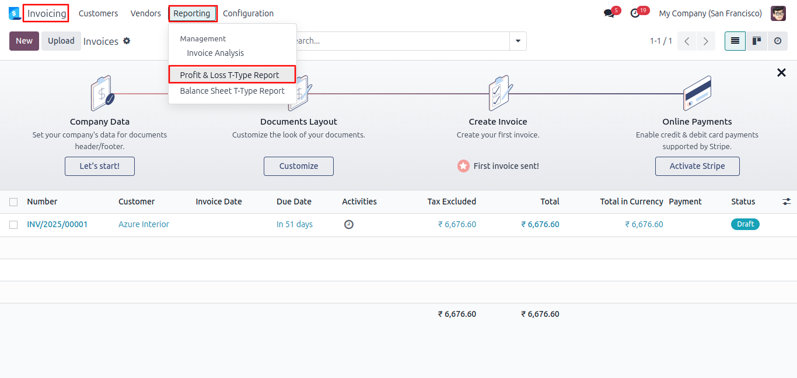
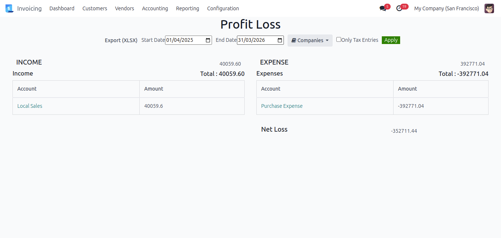
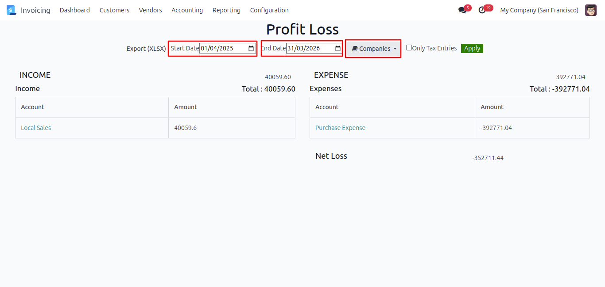
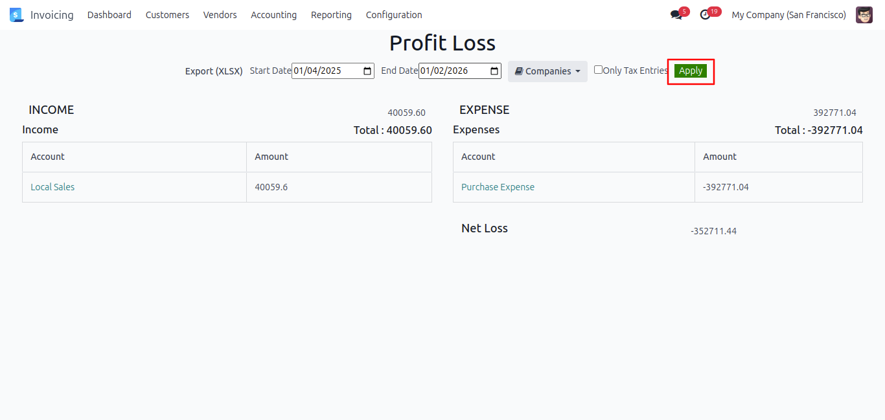
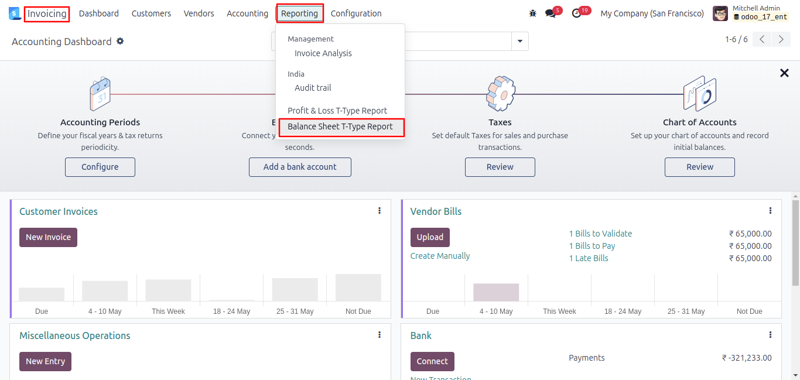
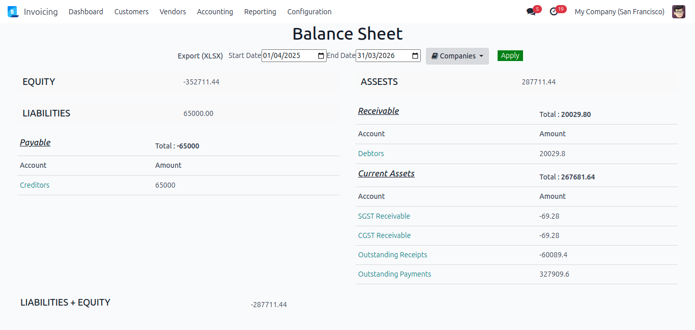
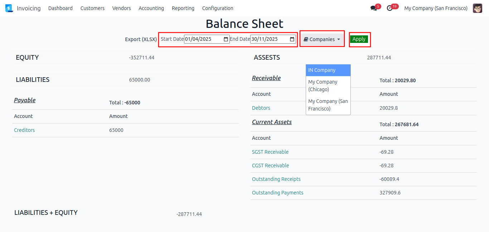
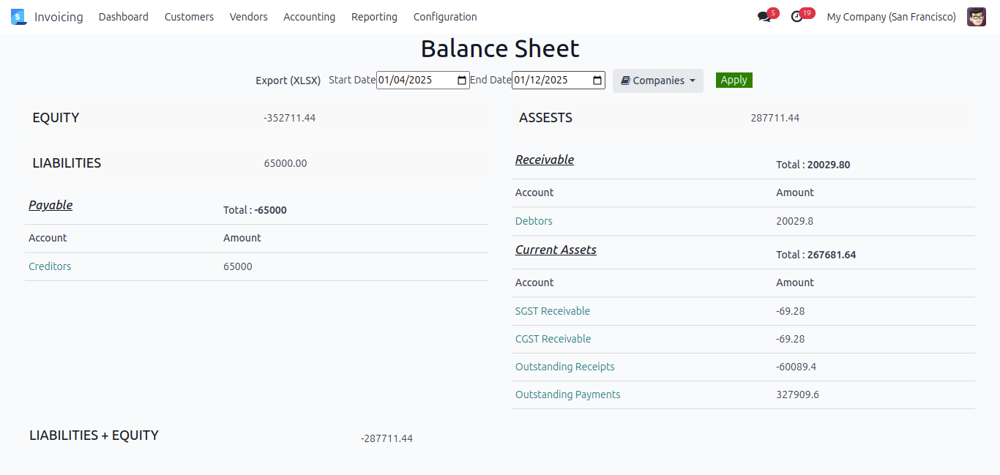
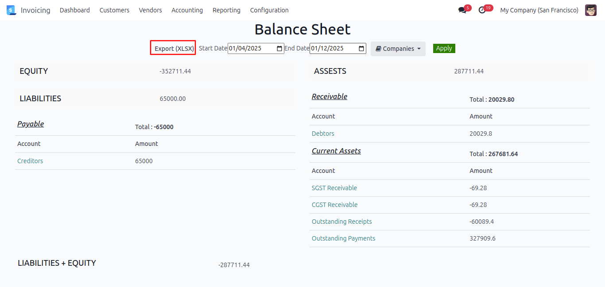

Work Flow for Profit & Loss T-type Report
Ensure that odoo accounting is set up with a chart of accounts, journals, fiscal year and periods, and that journal entries are posted.
To access the T-Type Report, navigate to Invoicing >> Reporting >> Profit & Loss T-Type Report, and click on it

You can view the current financial year's Profit and Loss report by default.

You can also apply filters within the report. For example, if you want to create the Profit & Loss report for a specific date range, you can do so.
Similarly, to generate the report for a particular company, simply select the company and click the 'Apply' button.

When you click the 'Apply' button, the report is generated based on the selected filters. It displays Income on the left and Expenses on the right, grouped by account, with subtotals
and running balances (if applicable).

Work Flow for Balance Sheet T-type Report
To access the T-Type Report, navigate to Invoicing >> Reporting >> Balance Sheet T-Type Report, and click on it

You can view the current financial year's Balance Sheet t-type report by default.

You can also apply filters within the report. For example, if you want to generate the Balance sheet report for a specific date range, you can do so. Similarly, if you want to generate the report for a particular company, simply select the company and click the 'Apply' button to generate the report.

When you click the 'Apply' button, the report is generated based on the selected filters. It displays Equity and Liabilities and related accounts (Debits) on the left, and Assets, Current Assets and related accounts (Credits) on the right, grouped by account. The report includes subtotals and running balances, where applicable.

You can also export the generated report as an Excel file. You'll see the 'Export (XLSX)' button, and when you click it, the report will be downloaded in Excel format.

We understand the need for clarity and control in financial reporting. With the T-Type Accounting Report for Odoo, you get clean, visualized insights that mirror traditional accounting. No more confusing formats-just structured, side-by-side debit and credit views. Make smarter decisions faster and experience the simplicity of professional reporting with Reliution's T-Type Accounting Report for Odoo powerful tool.